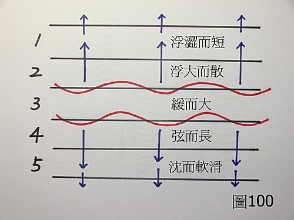

脈理醫理學 20.1：《內經》中的「五臟平脈」說：「心脈浮大而散，肺脈浮澀而短，肝脈弦而長，脾脈緩而大，腎脈沉而軟滑。」這段經文到底是在講什麼？
作者：陳建元
心脈浮大而散， 肺脈浮澀而短，肝脈弦而長，脾脈緩而大，腎脈沉而軟滑。歷代脈書的前面，幾乎都會看到這段《內經》經文，這段《內經》經文到底是在講什麼？後代醫家其實是很困擾的，但因為是經文的緣故，大都不敢隨便否定，但是如果用在臨床上面，似乎又不太通達，所以歷代醫家在寫書的時候，遇到這段脈學經文的時候，大抵有兩種態度，一種是敷衍一下就跳過去，一種是強作解釋。兩種方法都造成更大的困擾
下面是強作解釋的例子：
元末滑壽的《診家樞要》中，解釋「五臟平脈」這段是這樣講的：
肺合皮毛，肺脈循皮毛而行。持脈指法，如三菽之重，按至皮毛而得者為浮，稍稍加力，脈道不利者為澀，又稍加力，不及本位為短。
心合血脈，心脈循血脈而行。持脈指法，如六菽之重，按至血脈而得者為浮，稍稍加力，脈道粗者為大，又稍加力脈道闊軟者為散。
脾合肌肉，脾脈循肌肉而行。持脈指法，如九菽之重，按至肌肉如微風輕飄柳梢之狀為緩，次稍加力，脈道敦實者為大。
肝合筋，肝脈循筋而行。持脈指法，如十二菽之重，按至筋而脈道如箏弦相似為弦，次稍加力，脈道迢迢者為長。
腎合骨，腎脈循骨而行。持脈指法，按至骨上而得者為沉，次重而按之，脈道無力為濡，舉指來疾流利為滑。
滑壽這段說明很明顯是為了尊經，強作解釋一通，恐怕連滑壽自己也看不懂自己在寫什麼？不但收不到效果，反而與《診家樞要》中原本定義好的28脈的脈義、脈位位置，造成相互矛盾，混淆不清。
歷代另一種說法就是說：
把到浮澀而短的就是肺脈，就是肺有問題。
把到浮大而散的就是心脈，就是心有問題。
把到緩而大的就是脾脈，就是脾有問題。
把到弦而長的就是肝脈，就是肝有問題。
把到沉而軟滑的就是腎脈，就是腎有問題。
這種解釋也是錯誤的，以此來看脈也必定錯誤連篇。浮澀而短是虛，但是虛的部位也可能在心脾肝腎，不只在肺，純以肺來論斷，正確率只有20％。浮大而散是稍有實火，但實火的部位也可能是在肺脾肝腎，不只在心，純以心來論斷，正確率只有20％。緩而大是稍有濕熱，但濕熱的部位也可能是在心肺肝腎，不只在脾，純以脾來論斷，正確率只有20％。弦而長是氣滯，但氣滯的部位也可能是在心肺脾腎，不只在肝，純以肝來論斷，正確率只有20％。沉而軟滑是稍有寒濕，但寒濕的部位也可能是在心肺脾肝，不只在腎，純以腎來論斷，正確率只有20％。
那這段經文到底是在講什麼呢？其實很簡單，只是在描述脈理醫理學 25 條的平脈模型。

〈圖100〉是第25條所說的平脈。當正常的平脈時，脈管鼓動的樣子，用手摸一摸，你摸到了什麼？你會發現第3層的力量最大，第2、4層也尚能感覺到震幅，第1、5層的感覺就若有若無了。現在再把《內經》這段文章看幾次，是不是這個樣子？在這個模型下，自己壓壓看，就會發現其實這段經文敘述的，是標準的五層脈模型，在正常的標準模型下，以脾位的力道最大，依次向兩邊鼓動的力道遞減，越來越無力量，肝位因為初受壓而脈管的彈性力會反抗，所以會帶點弦緊的感覺。浮澀而短（澀短已經很無力了）、沉而軟滑（軟也是無力、虛滑無力的意思）＜浮大而散的心位、弦而長的肝位＜緩而大的脾位。
這段文字的敘述，是說在標準正常脈的情況下，用手壓壓每一層，會發現力道的大小和感覺是：
浮澀而短的肺位 ＜ 浮大而散的心位 ＜ 緩而大的脾位 ＞ 弦而長的肝位 ＞ 沉而軟滑的腎位
其實，這段經文只是在描述第25條標準平脈的樣子。並不是說：
把到浮澀而短的就是肺脈，就是肺有問題。
把到浮大而散的就是心脈，就是心有問題。
把到緩而大的就是脾脈，就是脾有問題。
把到弦而長的就是肝脈，就是肝有問題。
把到沉而軟滑的就是腎脈，就是腎有問題。
脈象的判定，要以28脈為原則和5層脈病機來判定才是正確的。譬如把到弦而長的就是肝脈，就是氣滯，這種說法其實是對中摻錯，不完全正確，還必須參合脈位才能正確。如果弦而長是在第1層，偏外感；如果弦而長是在第2層，偏陰虛；如果弦而長是在第4、5層，才是偏肝脈的氣滯。
【引用請先來信告知徵求同意，若有涉及販售營利等商業行為，版權所有拷貝盜用必究。】
【藥王脈學講壇】http://blog.xuite.net/drjychen/twblog